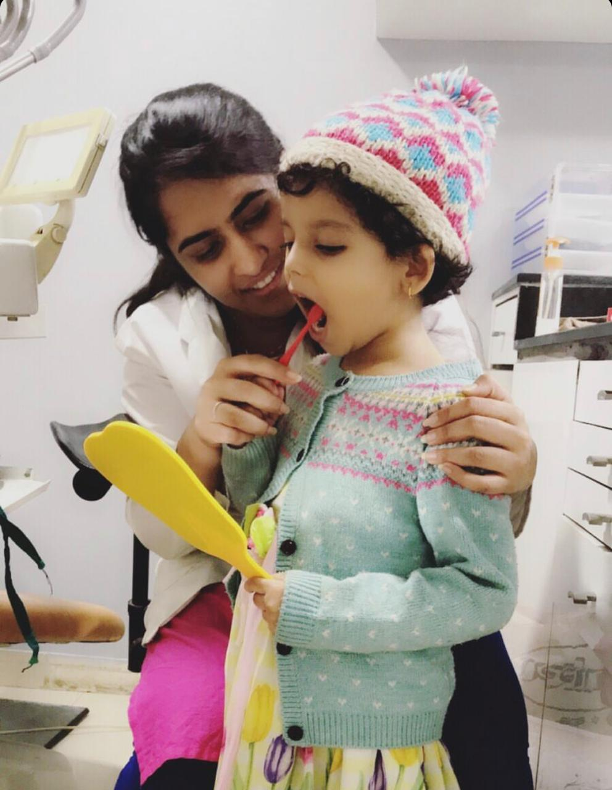

Pramod S Deshmukh.
Corporate Trainer|Manage-O-Tech.
ENTICE

Lessons of Good Dental Health Applied to Life
01 Jul 2019 | 19:07:27
Good Dental Health is achieved more by brushing teeth 2-3 times a day & not only by 2 biannual visit to Dentist.
The magic is done by everyday mundane, boring, repetitive activities & not by sporadic once in a while activities.The mundane activities don't create any ripples & hence majority of people start aggressively a new thing, but fail to keep up the consistency. Along with the routine, consistent, repetitive activities a six monthly booster can create a huge impact.
This analogy applies to :
- Dental health
- Mental health
- Physical health
- Financial health
- Team Building & Bonding
- Leadership impact
- Business sustainable growth
- Parents Children relationship
- Spouse relationship
- Social work.
- Prayers.
So let's get consistent on the mundane & routine with a strong belief that it is this consistency that creates the impact.
-- PramodDeshmukh aka PSD